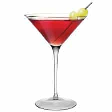

Bacon is a libertarian that enjoys spending his time in developing countries


First we can start by eliminating what she should not be drinking: beer. This is the worst source of alcohol per volume as most beers average a mere 5%. It will also cause her to go to the bathroom more than anything else you could pour for her. The best drinks to give women are ones that you make from scratch. Making a drink for a girl accomplishes two things. First it helps highlight your attributes and skills and makes you seem more desirable. Second, it gives her the liquid courage to let you take advantage of her in ways her sober self might execute self-restraint. It’s a tried and proven method for me and if I can indulge your curiosity these are some of the best drinks I have found to help seal the deal.
Even the most amateur of drinkers knows women love this. Maybe it’s the red coloring, the fruity aftertaste or because it’s associated with the dumb show “Sex and the City”. Anyway it’s an easy drink to put together and women practically believe it’s their duty as females to enjoy it.

I do not know the name of this drink but even someone who hates the taste of alcohol would not detect the slightest tinge of booze in this cocktail. I have known several non-drinkers who let their guard down when drinking this only to find themselves three sheets to the wind in no time at all. Gentlemen this cocktail is in many ways the equivalent to spiking a girl’s drink with roofies but with none of the legal and moral complications. Basically, if the devil was serving a punch bowl to a bunch of church ladies this would be his recipe.
For shots make a blow job. The sexual innuendo is a plus but women genuinely love drinking this. It goes down smooth and its main ingredients are Bailey’s Irish cream and Kahlua which are a staple in every single girl’s liquor cabinet. Also any man who has seen the movie “American Pie” can without much imagination think of uses for final ingredient in the drink, whipped cream, once she is done taking the shot.
This drink is a rum and coke with a lime. I have found that a girl’s familiarity with coke helps this drink go down easier. It is easy as shit to make and throwing in a lime wedge makes it seem like some effort went in to making this for her. By the way limes can last for months in the fridge and are cheap as shit.
Every girl wants to go to Spain. I think it’s implanted in their DNA at birth. They see it as a safe European country with lots of history and what not. Anyway, unless you’re a master chef and can cook up some paella this is the next best thing to bringing them a bit of Spanish culture. The sweetness of the drink offsets the potency of the wine and makes it go down easy. Plus unless she is a wine snob, you can use cheap wine as the fruit juices make it difficult to tell what kind of financial investment you put into the bottle(or box) of wine that went into the sangria.
This drink separates the men from the bartenders. Seriously, if you have never been to Peru how many people have had one? It is actually pretty easy to make and in most liquor stores you can find a bottle of Pisco. While the exotic factor alone really makes women fall in love with this drink, it is also surprisingly sweet, sour and of a high alcohol volume. Since she is a girl (i.e. gullible) you can tell her you brought the bottle of Pisco back from your recent trip to Peru or that you had your Peruvian friends bring a bottle back from their homeland just for you.
There is one other benefit to making drinks I have not mentioned: you can easily make yourself a non alcoholic beverage and pass it off as cocktail. After all it´s not you who needs the liquid lubricant for sex.
Don’t Miss: The Best Player Song Ever Recorded
{kind=link}
{kind=link}
{kind=link}
{kind=link}
{kind=link}
{kind=link}